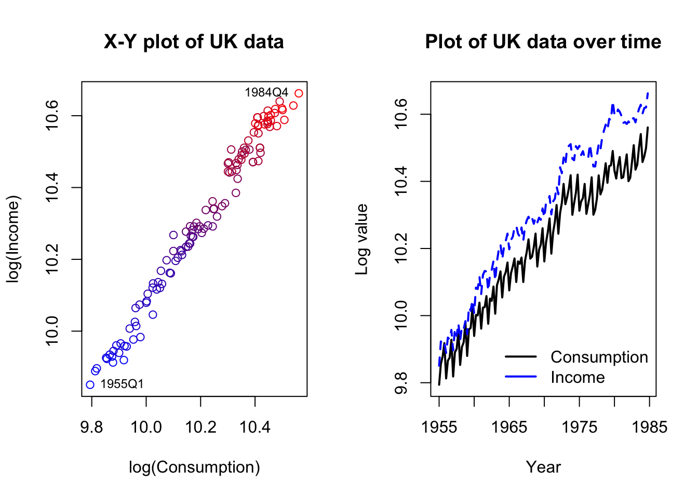
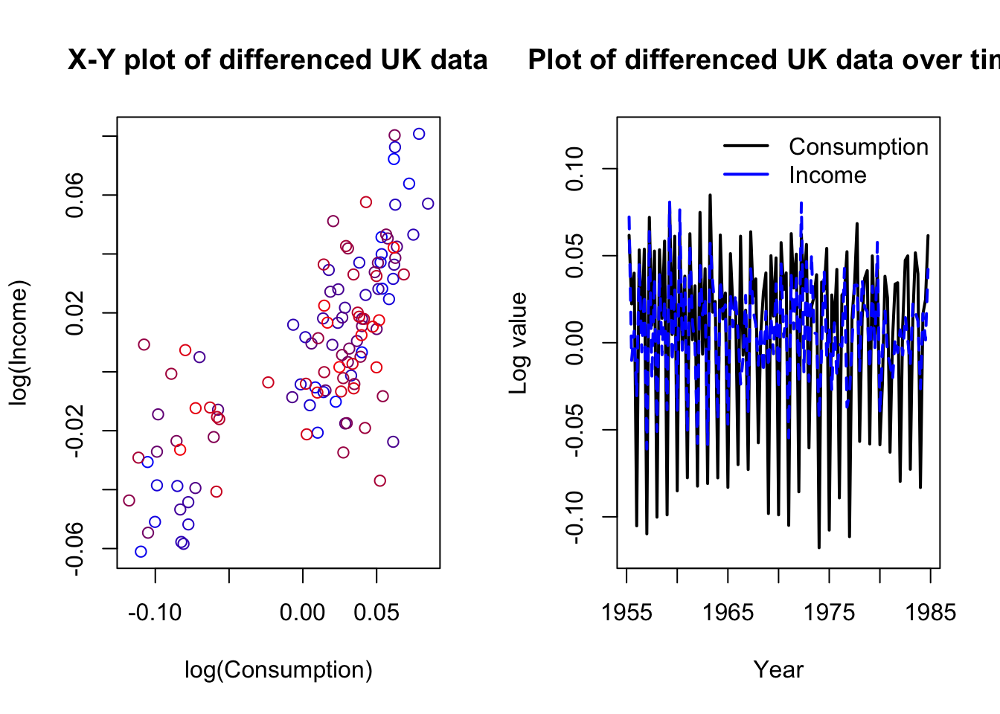
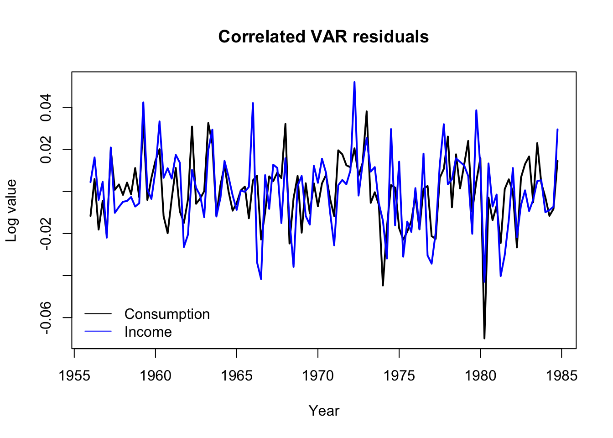

library(urca)
library(vars)Vector autoregressions (VARs)
Now we will learn about vector autoregressions (VARs). VARs look complicated, but they are in fact quite simple — too simple, in fact, for many applications. Please, review this material without worrying that you are missing something!
Motivation as an extension of ADLs
Previously, we explored dynamic regressions, which included a class of model known as autoregressive distributed lag (ADL) models. They use a regression framework to predict one time series based on its own past values, external predictors, and (optionally) the past values of those predictors:
\[y_t = \alpha_0 + \alpha_1 y_{t-1} + \ldots + \alpha_p y_{t-p} + \beta_1 x_t + \beta_2 x_{t-2} + \ldots + \beta_p x_{t-p} + \omega_t\]
(Where \(\alpha\) and \(\beta\) terms are constant coefficients, \(p\) is the maximum lag order, and \(\omega_t\) is a white noise process.)
In the equation above, we predict \(\boldsymbol{Y}\) as a function of itself and of \(\boldsymbol{X}\). What about \(\boldsymbol{X}\) — what if it in turn is predicted by its own past values, and perhaps by \(\boldsymbol{Y}\) and its lags?
\[x_t = \gamma_0 + \gamma_1 x_{t-1} + \ldots + \gamma_{p} x_{t-p} + \delta_1 y_t + \delta_2 y_{t-2} + \ldots + \delta_{p} y_{t-p} + \omega_t'\]
(Where \(\gamma\) and \(\delta\) terms are constant coefficients, \(p\)is the maximum lag order, and \(\omega'_t\) is a white noise process which might be different from \(\omega_t\).)
We could even add a third or fourth random variable to the mix. Many random variables, all affecting themselves and each other through their lagged values. Meanwhile, the error terms of these equations are each believed to be white noise (optionally, we could say Gaussian white noise), free of any ARIMA-like dependencies. However, since these variables are linked by time and usually by some sort of subject-matter domain, the error terms are presumed to be independent of their own past values, but not independent of each other’s current values: a shock to \(\boldsymbol{Y}\) at time index \(t\) may also be seen in \(\boldsymbol{X}\) at time index \(t\).
Reduced-form VARs
Rather than call our random variables \(Y\) and \(X\) (and optionally \(W\) and \(Z\), etc.), let’s recognize the fact that they are all response variables by naming them \(Y_1, \ldots, Y_i, \ldots, Y_K\). We could write a data generating process for each variable separately:
\[y_{i,t} = c_{i,0} + \left(\sum_{i=1}^K \sum_{j=1}^p \alpha_{i,j} \, y_{i,t-j}\right) + \omega_{i,t}\]
Where \(c_{i,0}\) is a mean-fitting constant and \(\alpha_{i,j}\) is an autoregressive coefficient.1 However this problem is screaming out for a matrix representation, so let me show that instead.
Note
Let \(\boldsymbol{y}_t = y_{1,t}, \ldots, y_{K,t}\) be a vector of \(K\) different time series variables observed at time index \(t\) (and other regularly-sampled time indices). Let \(\boldsymbol{c} = c_1, \ldots, c_K\) be a vector of constants, and let \(\boldsymbol{\omega}_t = \omega_{1,t}, \ldots, \omega_{K,t}\) be a vector of \(K\) different white noise processes observed at time index \(t\), serially independent (\(\omega_{i,s} \perp \omega_{i,t} \forall s \ne t\)) but potentially cross-correlated (\(\textrm{Cor}(\omega_{i,t} \perp \omega_{j,t}) \ge 0\)). Then, a reduced-form VAR \(R\) can be written:
\[R: \quad \boldsymbol{y}_t = \boldsymbol{c} + \mathbf{A}_1 \boldsymbol{y}_{t-1} + \ldots + \mathbf{A}_p \boldsymbol{y}_{t-p} + \boldsymbol{\omega}_t\]
Where each \(K \times K\) matrix \(\mathbf{A}_j\) contains the autoregressive coefficients for lag \(j\):
\[\mathbf{A}_j = \left[\begin{array}{ccc} \phi_{j;1,1} & \cdots & \phi_{j;1,K} \\ \vdots & \ddots & \vdots \\ \phi_{j;K,1} & \cdots & \phi_{j;K,K} \end{array}\right]\]
The beauty of the reduced-form VAR is that it can be fit as a series of independent ordinary least-squares (OLS) regressions, a rarity in the field of time series modeling. Each response variable can essentially be fit as its own autoregressive distributed lag (ADL) model, without needing to link the equations in any way!
Let’s consider a simple example with only two series. The dataset describes consumption (i.e. expenditures) and incomes in the United Kingdom, during the 120 quarters from 1955 through 1984.
Code
data(UKconinc)
par(mfrow=c(1,2))
plot(UKconinc,xlab='log(Consumption)',ylab='log(Income)',
main='X-Y plot of UK data',
col=colorRampPalette(c('#0000ff','#7f007f','#ff0000'))(120))
text(UKconinc[1,],labels='1955Q1',cex=0.75,pos=4)
text(UKconinc[120,],labels='1984Q4',cex=0.75,pos=2)
matplot(seq(1955,1984.75,0.25),UKconinc,type='l',lwd=2,xlab='Year',ylab='Log value',
main='Plot of UK data over time',col=c('#000000','#0000ff'))
legend(x='bottomright',bty='n',lwd=2,col=c('#000000','#0000ff'),
legend=c('Consumption','Income'))
The data are clearly nonstationary and at least one series is also strongly seasonal. We should difference the data, but we may not want to de-seasonalize. We are trying to study how movements in each variable create movements in the other — removing the seasonal movement might rob us of important information. Let’s plot the differenced data and then run a reduced-form VAR, adding seasonal dummies:
Code
diffUK <- diff(as.matrix(UKconinc))
par(mfrow=c(1,2))
plot(diffUK,xlab='log(Consumption)',ylab='log(Income)',
main='X-Y plot of differenced UK data',
col=colorRampPalette(c('#0000ff','#7f007f','#ff0000'))(120))
text(diffUK[1,],labels='1955Q2',cex=0.75,pos=4)
text(diffUK[119,],labels='1984Q4',cex=0.75,pos=2)
matplot(seq(1955.25,1984.75,0.25),diffUK,type='l',lwd=2,xlab='Year',ylab='Log value',
main='Plot of differenced UK data over time',col=c('#000000','#0000ff'),
ylim=c(-0.12,0.12))
legend(x='topright',bty='n',lwd=2,col=c('#000000','#0000ff'),
legend=c('Consumption','Income'))
Code
coninc.var <- VAR(diffUK,type='const',p=3,season=4)
summary(coninc.var)
VAR Estimation Results:
=========================
Endogenous variables: conl, incl
Deterministic variables: const
Sample size: 116
Log Likelihood: 642.121
Roots of the characteristic polynomial:
0.8296 0.8296 0.7994 0.7994 0.5543 0.5543
Call:
VAR(y = diffUK, p = 3, type = "const", season = 4L)
Estimation results for equation conl:
=====================================
conl = conl.l1 + incl.l1 + conl.l2 + incl.l2 + conl.l3 + incl.l3 + const + sd1 + sd2 + sd3
Estimate Std. Error t value Pr(>|t|)
conl.l1 -0.533266 0.104166 -5.119 1.38e-06 ***
incl.l1 0.206027 0.094817 2.173 0.032016 *
conl.l2 -0.425736 0.110230 -3.862 0.000194 ***
incl.l2 0.315668 0.096868 3.259 0.001504 **
conl.l3 -0.498203 0.108821 -4.578 1.28e-05 ***
incl.l3 0.159922 0.086918 1.840 0.068580 .
const 0.009333 0.001916 4.871 3.91e-06 ***
sd1 0.066950 0.012130 5.519 2.43e-07 ***
sd2 0.070991 0.011351 6.254 8.58e-09 ***
sd3 0.066194 0.013189 5.019 2.11e-06 ***
---
Signif. codes: 0 '***' 0.001 '**' 0.01 '*' 0.05 '.' 0.1 ' ' 1
Residual standard error: 0.01662 on 106 degrees of freedom
Multiple R-Squared: 0.9193, Adjusted R-squared: 0.9125
F-statistic: 134.2 on 9 and 106 DF, p-value: < 2.2e-16
Estimation results for equation incl:
=====================================
incl = conl.l1 + incl.l1 + conl.l2 + incl.l2 + conl.l3 + incl.l3 + const + sd1 + sd2 + sd3
Estimate Std. Error t value Pr(>|t|)
conl.l1 0.212510 0.119861 1.773 0.079107 .
incl.l1 -0.417101 0.109104 -3.823 0.000223 ***
conl.l2 0.351577 0.126839 2.772 0.006585 **
incl.l2 -0.050453 0.111463 -0.453 0.651733
conl.l3 0.046204 0.125218 0.369 0.712874
incl.l3 -0.286088 0.100015 -2.860 0.005097 **
const 0.007826 0.002205 3.549 0.000577 ***
sd1 0.052807 0.013958 3.783 0.000256 ***
sd2 0.073275 0.013062 5.610 1.63e-07 ***
sd3 0.030635 0.015176 2.019 0.046056 *
---
Signif. codes: 0 '***' 0.001 '**' 0.01 '*' 0.05 '.' 0.1 ' ' 1
Residual standard error: 0.01913 on 106 degrees of freedom
Multiple R-Squared: 0.6609, Adjusted R-squared: 0.6321
F-statistic: 22.95 on 9 and 106 DF, p-value: < 2.2e-16
Covariance matrix of residuals:
conl incl
conl 0.0002764 0.0001931
incl 0.0001931 0.0003659
Correlation matrix of residuals:
conl incl
conl 1.0000 0.6071
incl 0.6071 1.0000By adding the seasonal terms to the VAR equations, we allow the model to disentangle the seasonal effects from the regressive and autoregressive effects.
We see two separate sets of regression results as well as some data helping us to unify the two regressions:
None of the AR roots are very close to 1, building confidence that we have eliminated spurious regression and random walk behavior through our differencing.
The seasonal dummies are very important in both regressions, which is no surprise.
Past values of consumption and income seem important at least through the second or third lag in each equation.
As expected, when past income has been increasing, present consumption is expected to increase.
As expected, when past consumption has been increased, present income is expected to increase.
More interestingly, changes in both income and consumption are negatively predicted by their own past values, perhaps a result of data smoothing, reporting adjustments, etc.
The two residual series are strongly cross-correlated, with \(\hat{\rho} \approx 0.61\).
In fact, we can take a look at the residuals and see how they move together. Notice the sharp downward spike in Q1 of 1980 which began an economic depression in the United Kingdom, brought about by new Thatcherite/Tory monetary policies as well as broader international shocks such as the oil crisis.
Code
matplot(seq(1956,1984.75,0.25),residuals(coninc.var),type='l',lwd=2,xlab='Year',ylab='Log value',
main='Correlated VAR residuals',lty=1,col=c('#000000','#0000ff'))
legend(x='bottomleft',bty='n',lwd=1,col=c('#000000','#0000ff'),
legend=c('Consumption','Income'))
Forecasting from this series would be easy: we have already modeled \(Y_{1,t}\) (changes in log consumption) and \(Y_{2,t}\) (changes in log income) as functions of their past values, creating a natural recursive forecasting strategy for future values:
\[\hat{\boldsymbol{y}}_{N+1} = \boldsymbol{c} + \hat{\mathbf{A}}_1 \boldsymbol{y}_N + \ldots + \hat{\mathbf{A}}_p \boldsymbol{y}_{N-p+1}\]
What have we accomplished with this reduced-form VAR?
Estimation process is very straightforward and computationally lightweight
Explicit identification of how past lags from both series affects the current values of each series
Estimation of a cross-correlated residual
Easy recursive forecasting process
Still, this doesn’t seem much different than what we could create by fitting several autoregressive distributed lag (ADL) models to each series individually. And reduced-form VARs have two glaring weaknesses:
The model is entirely atheoretical.2 State space models, exponential smoothing models, error correction models (ECMs), and the MA terms of an ARIMA model all try to define, structure, and estimate a hidden data generating process. By constrast, VAR models simply measure the correlation between observed series (the multiple series of \(\boldsymbol{y}\) and their past values).
The residuals are serially independent but cross-correlated, which leaves some ambiguity as to how each series truly affects the other, and prevents us from fully decomposing the source or effects of new shocks.
Structural VARs
Into this gap steps a solution, the structural VAR (or SVAR). By re-expressing a reduced-form VAR under one or more parameter constraints, we can learn more about the dynamics of the data-generating system.
Note
Let the variables, errors, and coefficients of a reduced-form VAR \(R\) be defined as above. Let \(\boldsymbol{c}' = c'_1, \ldots, c'_K\) be a vector of constants, and let \(\boldsymbol{\varepsilon}_t = \varepsilon_{1,t}, \ldots, \varepsilon_{K,t}\) be a vector of \(K\) different serially and cross-independent white noise processes observed at time index \(t\). Consider the equation \(S\):
\[S: \quad \mathbf{A} \boldsymbol{y}_t = \boldsymbol{c}' + \mathbf{A}'_1 \boldsymbol{y}_{t-1} + \ldots + \mathbf{A}'_p \boldsymbol{y}_{t-p} + \mathbf{B} \boldsymbol{\varepsilon}_t\]
Where the \(K \times K\) matrix \(\mathbf{A}\) codes for contemporaneous effects of the variables \(\boldsymbol{Y}\) on each other, and each \(K \times K\) matrix \(\mathbf{A}'_j\) codes for the lagged effects of the variables \(\boldsymbol{Y}\) on each other, and where the \(K \times K\) matrix \(\mathbf{B}\) codes for the contemporaneous effects of the shocks \(\boldsymbol{\varepsilon}\) on \(\boldsymbol{Y}\).
If \(\mathbf{A}\) is defined such that:
\[\begin{aligned} \mathbf{A}^{-1}(\mathbf{A} \boldsymbol{y}_t) &= \\ \boldsymbol{y}_t &= \mathbf{A}^{-1}\boldsymbol{c}' + \mathbf{A}^{-1}\mathbf{A}'_1 \boldsymbol{y}_{t-1} + \ldots + \mathbf{A}^{-1}\mathbf{A}'_p \boldsymbol{y}_{t-p} + \mathbf{A}^{-1}\mathbf{B} \boldsymbol{\varepsilon}_t \\ &= \boldsymbol{c} + \mathbf{A}_1 \boldsymbol{y}_{t-1} + \ldots + \mathbf{A}_p \boldsymbol{y}_{t-p} + \boldsymbol{\omega}_t \\ &= R\end{aligned}\]
Then we say that \(S\) is a structural VAR (SVAR) for \(R\) and that \(\mathbf{A}^{-1}\mathbf{B}\) is the impact matrix for \(R\).
The equations for a structural VAR look difficult, but algorithmic methods will find a solution where one (and only one) exists. The real problem is finding only one solution: these equations above are actually underdetermined, meaning that many different solutions present themselves. We will have to make some restrictive assumptions to proceed:
Restricting and estimating the contemporaneous effects A
We usually assume that the contemporaneous effects matrix \(\mathbf{A}\) contains 1s along the diagonal. In a two-variable system, we could write:
\[\begin{aligned} \mathbf{A} \boldsymbol{y}_t &= \boldsymbol{c}' + \ldots \longrightarrow \\ \\ \left[\begin{array}{cc} 1 & a_{1,2} \\ a_{2,1} & 1 \end{array}\right]\left[\begin{array}{c} y_{1,t} \\ y_{2,t} \end{array}\right] &= \boldsymbol{c}' + \ldots \longrightarrow \\ \\ \left[\begin{array}{c} y_{1,t} + a_{1,2} y_{2,t} \\ y_{2,t} + a_{2,1} y_{1,t} \end{array}\right] &= \boldsymbol{c}' + \ldots \longrightarrow \\ \\ \left[\begin{array}{c} y_{1,t} \\ y_{2,t} \end{array}\right] &= \boldsymbol{c}' - \left[\begin{array}{c} a_{1,2} y_{2,t} \\ a_{2,1} y_{1,t} \end{array}\right]+ \ldots\end{aligned}\]
Meaning that the terms \(a_{1,2}\) and \(a_{2,1}\) contain information on how the variables affect each other contemporaneously. However, this model is underdetermined: \(\boldsymbol{y}_1\) and \(\boldsymbol{y}_2\) can’t both simultaneously affect each other in a way that we can measure. Furthermore, the error coefficients \(\mathbf{B}\) have not been specified, and might scale or rotate our contemporaneous effects in unknown ways.
If we impose some model constraints, we might be able to forge ahead. Which and how many constraints to impose will depend upon the number of variables in the system, particulars of your estimation method, and the domain context. For now, let’s suppose it to be a priori economic truth that a same-quarter rise in income might immediately generate additional consumption, but that same-quarter changes in consumption do not typically immediately affect income. Further, let’s assume without loss of generality that the errors remain unscaled and fully diagonalized:
\[\mathbf{A} = \left[\begin{array}{cc} 1 & a \\ 0 & 1 \end{array}\right], \quad \mathbf{B} = \left[\begin{array}{cc} 1 & 0 \\ 0 & 1 \end{array}\right]\]
Implying,
\[\begin{array}{rcl} \nabla y_{\textrm{Conl},t} & = & c_\textrm{Conl} - a \nabla y_{\textrm{Incl},t} + \ldots \\ \nabla y_{\textrm{Incl},t} & = & c_\textrm{Incl} - 0 \nabla y_{\textrm{Conl},t} + \ldots \end{array}\]
This allows us to solve for the missing coefficient \(a\).
Code
(svar.a <- SVAR(coninc.var,estmethod='direct',Amat=matrix(c(1,0,NA,1),nrow=2),method='BFGS'))
SVAR Estimation Results:
========================
Estimated A matrix:
conl incl
conl 1 -0.5276
incl 0 1.0000Suggesting that a one-unit change in log income will increase3 log consumption by about 0.53 units.
We can use this \(\mathbf{A}\) matrix to indirectly estimate the impact matrix, since due to our assumption that \(\mathbf{B}\) is the identity matrix we have \(\boldsymbol{\omega}_t = \mathbf{A}^{-1} \mathbf{B} \boldsymbol{\varepsilon}_t = \mathbf{A}^{-1} \boldsymbol{\varepsilon}_t\):
Code
solve(svar.a$A) conl incl
conl 1 0.5275981
incl 0 1.0000000Ignore the column headings here; they are somewhat misleading. The two columns represent two types of uncorrelated shocks (\(\boldsymbol{\varepsilon}_1\) and \(\boldsymbol{\varepsilon}_2\)) that we believe are “hidden” behind the observed variables in our system. A one-SD change in \(\boldsymbol{\varepsilon}_1\) will shock changes in log consumption by one SD as well, with no change to log income. A one-SD change \(\boldsymbol{\varepsilon}_1\) will shock changes in log consumption by 0.53 SDs and shock changes in log income by one SD.
Restricting and estimating the structural shocks B
The restrictions we place on the \(\mathbf{A}\) matrix reflect our assumptions for what type of contemporaneous effects we believe can exist in the system; from this assumption we can indirectly estimate an impact matrix. However, we can directly estimate the impact matrix by considering the \(\mathbf{B}\) matrix. We saw earlier that the correlated residuals from a reduced-form VAR and the uncorrelated “hidden” shocks are related by the equation \(\boldsymbol{\omega}_t = \mathbf{A}^{-1} \mathbf{B} \boldsymbol{\varepsilon}_t\). By restricting \(\mathbf{B}\) instead of \(\mathbf{A}\), we can directly define how the “structural shocks” \(\boldsymbol{\varepsilon}\) are translated into our series residuals.
Let us now assume that \(\mathbf{A}\) is an identity matrix, that is, that there are no contemporaneous effects, and that the error coefficients \(\mathbf{B}\) are no longer diagonalized. Just as before, we can’t measure how \(\varepsilon_{1,t}\) and \(\varepsilon_{2,t}\) contribute to \(\omega_{1,t}\) and \(\omega_{2,t}\) if we allow both of them to contribute without restriction: there are too many free parameters in the model. However, we might assume that whatever structural forces are at play, they take the form of (1) generic spending shocks, which could include consumer preferences, demand shifts, exchange rates, and other factors which affect incomes as well as consumption, and (2) pure consumption shocks, which are not yet entangled with income (such as a change in interest rates):
\[\mathbf{A} = \left[\begin{array}{cc} 1 & 0 \\ 0 & 1 \end{array}\right], \quad \mathbf{B} = \left[\begin{array}{cc} 1 & b \\ 0 & 1 \end{array}\right]\]
This allows us to solve for the missing coefficient \(b\) and directly recover the impact matrix:
Code
SVAR(coninc.var,estmethod='direct',Bmat=matrix(c(1,0,NA,1),nrow=2),method='BFGS')
SVAR Estimation Results:
========================
Estimated B matrix:
conl incl
conl 1 0.5276
incl 0 1.0000In this small two-variable example, with very symmetric restrictions on \(\mathbf{A}\) and \(\mathbf{B}\), we landed on the same matrix, which muddies my lesson. However, for larger systems, these two matrices are not guaranteed or even expected to converge. On a conceptual level, they represent different structural ideals:
\(\mathbf{A}\) defines how shocks enter the system as a linear combination of contemporaneous information from different variables. It describes shocks, and clarifies which variables contribute to each others’ shocks and which don’t.
\(\mathbf{A}^{-1}\) should measure the impact of a series of hidden “column shocks” in terms of how many standard deviations they shift each variable in the system (the rows). I write “should” because: estimation is messy, matrix inversion can be fickle, and depending on the types of restrictions to \(\mathbf{A}\) and \(\mathbf{B}\) (including possible overdetermination, or uncommon restrictions such as symmetric off-diagonal entries), unexpected behavior might result.
\(\mathbf{B}\) does directly measure the impact of shocks, though it does not describe how the shocks were created.